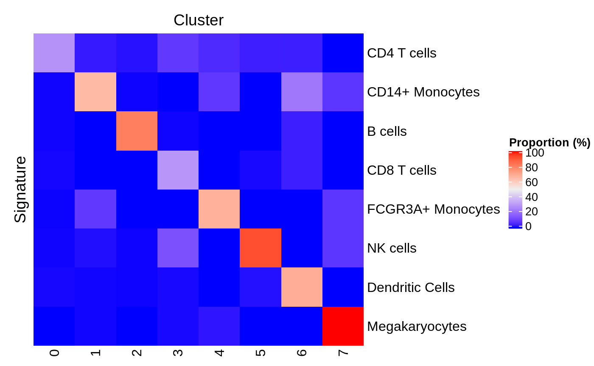
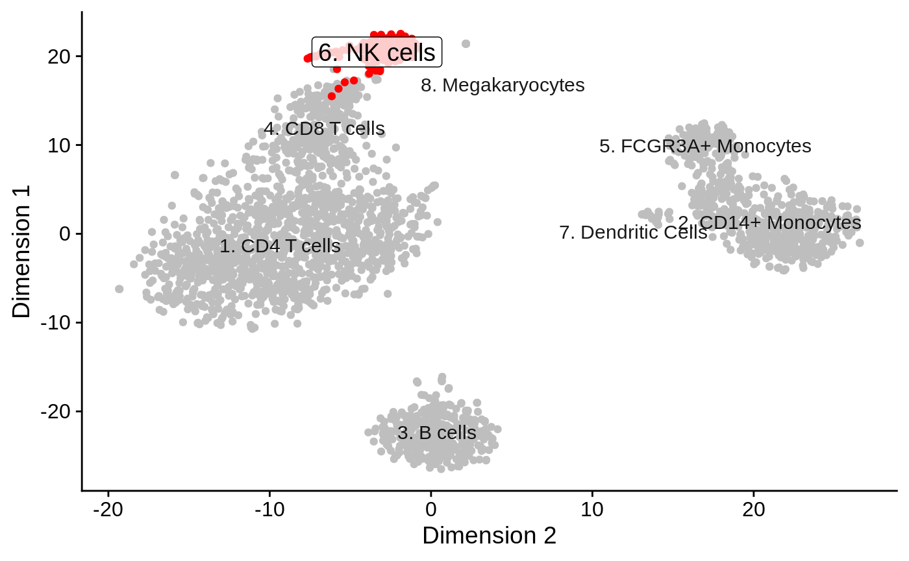

vignettes/hancock.Rmd
hancock.RmdAbstract
Example usage of the hancock package demonstrated using example data sets.Compiled date: 2020-05-25
Last edited: 2018-03-08
License: MIT + file LICENSE
The goal of the hancock package is to provide a collection of methods for learning and applying gene signatures associated with cellular phenotypes and identities. Particular focus is given to single-cell data stored in objects derived from the SummarizedExperiment class.
To run an analysis, the first step is to start R and load the hancock package:
library(hancock)
In this example, we use count data for 2,700 peripheral blood mononuclear cells (PBMC) obtained using the 10X Genomics platform.
First, we fetch the data as a SingleCellExperiment object using the TENxPBMCData package. The first time that the following code chunk is run, users should expect it to take additional time as it downloads data from the web and caches it on their local machine; subsequent evaluations of the same code chunk should only take a few seconds as the data set is then loaded from the local cache.
library(TENxPBMCData) tenx_pbmc3k <- TENxPBMCData(dataset="pbmc3k") tenx_pbmc3k #> class: SingleCellExperiment #> dim: 32738 2700 #> metadata(0): #> assays(1): counts #> rownames(32738): ENSG00000243485 ENSG00000237613 ... ENSG00000215616 #> ENSG00000215611 #> rowData names(3): ENSEMBL_ID Symbol_TENx Symbol #> colnames: NULL #> colData names(11): Sample Barcode ... Individual Date_published #> reducedDimNames(0): #> altExpNames(0):
To enter more rapidly into the subject of learning and applying gene signatures, we provide the cluster assignment of cells produced by the Guided Clustering Tutorial of the Seurat package.
colnames(tenx_pbmc3k) <- paste0("Cell", seq_len(ncol(tenx_pbmc3k))) ident <- readRDS(system.file(package = "hancock", "extdata", "pbmc3k.ident.rds")) tenx_pbmc3k <- tenx_pbmc3k[, names(ident)] tenx_pbmc3k$seurat.ident <- ident table(tenx_pbmc3k$seurat.ident) #> #> 0 1 2 3 4 5 6 7 #> 1151 479 342 308 157 155 32 14
In addition, we store manually curated cell type annotations in the "seurat.celltype" cell metadata. Those will be used below to learn signatures associated with well characterized cell populations.
tenx_pbmc3k$seurat.celltype <- factor(tenx_pbmc3k$seurat.ident, labels = c( "CD4 T cells", "CD14+ Monocytes", "B cells", "CD8 T cells", "FCGR3A+ Monocytes", "NK cells", "Dendritic Cells", "Megakaryocytes" )) table(tenx_pbmc3k$seurat.celltype) #> #> CD4 T cells CD14+ Monocytes B cells CD8 T cells #> 1151 479 342 308 #> FCGR3A+ Monocytes NK cells Dendritic Cells Megakaryocytes #> 157 155 32 14
In order to find markers that discriminate subsets of cells from each other, learning methods typically require prior clustering information. In SingleCellExperiment objects, this information is easily stored as a factor in a column of the colData slot.
For instance, the learning method "PositiveProportionDifference" can be applied to identify markers for a set of cell populations. In particular, this method offers a variety of filters on individual markers (e.g., minimal difference in detection rate between the target cluster and any other cluster), and on the combined set of markers (e.g., minimal proportion of cells in the target cluster where all markers are detected simultaneously).
Here, we use the manually curated cell type labels to find genes markers for each population of cells in the PBMC. Specifically, we require markers to detected (strictly more than 0 counts; assay.type = "counts", threshold = 0) at least 20% more frequently in the target cluster than any other cluster (min.diff = 0.2, diff.method = "min"). Furthermore, we also require the combined set of markers to be codetected in at least 10% of the target cluster (min.prop = 0.1). Lastly, we request the method to return a maximum of 2 markers per signature (n = 2).
basesets <- learnSignatures( se = tenx_pbmc3k, assay.type = "counts", method = "PositiveProportionDifference", cluster.col = "seurat.celltype", threshold = 0, n = 2, min.diff = 0.2, diff.method = "min", min.prop = 0.1) basesets #> Sets with 16 relations between 16 elements and 8 sets #> element set | ProportionPositive #> <character> <character> | <numeric> #> [1] ENSG00000142546 CD4 T cells | 0.648132 #> [2] ENSG00000100100 CD4 T cells | 0.417897 #> [3] ENSG00000143546 CD14+ Monocytes | 0.972860 #> [4] ENSG00000170458 CD14+ Monocytes | 0.661795 #> [5] ENSG00000156738 B cells | 0.859649 #> ... ... ... . ... #> [12] ENSG00000115523 NK cells | 0.96129 #> [13] ENSG00000179639 Dendritic Cells | 0.84375 #> [14] ENSG00000108561 Dendritic Cells | 0.84375 #> [15] ENSG00000163736 Megakaryocytes | 1.00000 #> [16] ENSG00000163737 Megakaryocytes | 1.00000 #> minDifferenceProportion #> <numeric> #> [1] 0.241882 #> [2] 0.223092 #> [3] 0.469675 #> [4] 0.411795 #> [5] 0.776847 #> ... ... #> [12] 0.652849 #> [13] 0.829136 #> [14] 0.438885 #> [15] 0.942675 #> [16] 0.937500 #> ----------- #> elementInfo: IdVector with 1 metadata (ProportionPositive) #> setInfo: IdVector with 1 metadata (ProportionPositive)
In hancock, learning methods return Sets objects, defined in the unisets package. This container stores relations between elements (e.g., genes) and sets (e.g., signatures), along with optional metadata associated with each relation. In the next section, we explore the various pieces of information populated by method = "PositiveProportionDifference").
Notably, the metadata associated with each relation between a marker ("element") and the signature ("set") can be flattened in a data.frame format. Specifically, the "PositiveProportionDifference" describes two pieces of information:
"ProportionPositive", the proportion of cells with detectable expression of the marker in the associated cluster"minDifferenceProportion", the minimal difference betwween the detection rate in the associated cluster compared with that of each other clusterknitr::kable(head(as.data.frame(basesets)))
| element | set | ProportionPositive | minDifferenceProportion |
|---|---|---|---|
| ENSG00000142546 | CD4 T cells | 0.6481321 | 0.2418821 |
| ENSG00000100100 | CD4 T cells | 0.4178975 | 0.2230923 |
| ENSG00000143546 | CD14+ Monocytes | 0.9728601 | 0.4696754 |
| ENSG00000170458 | CD14+ Monocytes | 0.6617954 | 0.4117954 |
| ENSG00000156738 | B cells | 0.8596491 | 0.7768466 |
| ENSG00000105369 | B cells | 0.9356725 | 0.7481725 |
Specifically, we can extract the relationships between markers and clusters and annotate them with gene metadata such as gene symbol, stored in the rowData slot of the tenx_pbmc3k object.
markerTable <- merge( x = as.data.frame(basesets), y = as.data.frame(rowData(tenx_pbmc3k)[, "Symbol", drop=FALSE]), by.x="element", by.y="row.names", sort=FALSE ) knitr::kable(markerTable)
| element | set | ProportionPositive | minDifferenceProportion | Symbol |
|---|---|---|---|---|
| ENSG00000142546 | CD4 T cells | 0.6481321 | 0.2418821 | NOSIP |
| ENSG00000100100 | CD4 T cells | 0.4178975 | 0.2230923 | PIK3IP1 |
| ENSG00000143546 | CD14+ Monocytes | 0.9728601 | 0.4696754 | S100A8 |
| ENSG00000170458 | CD14+ Monocytes | 0.6617954 | 0.4117954 | CD14 |
| ENSG00000156738 | B cells | 0.8596491 | 0.7768466 | MS4A1 |
| ENSG00000105369 | B cells | 0.9356725 | 0.7481725 | CD79A |
| ENSG00000113088 | CD8 T cells | 0.5876623 | 0.4779849 | GZMK |
| ENSG00000153563 | CD8 T cells | 0.5032468 | 0.3989896 | CD8A |
| ENSG00000166927 | FCGR3A+ Monocytes | 0.8025478 | 0.5415874 | MS4A7 |
| ENSG00000224397 | FCGR3A+ Monocytes | 0.8216561 | 0.5252051 | SMIM25 |
| ENSG00000100453 | NK cells | 0.9548387 | 0.6658777 | GZMB |
| ENSG00000115523 | NK cells | 0.9612903 | 0.6528488 | GNLY |
| ENSG00000179639 | Dendritic Cells | 0.8437500 | 0.8291362 | FCER1A |
| ENSG00000108561 | Dendritic Cells | 0.8437500 | 0.4388847 | C1QBP |
| ENSG00000163736 | Megakaryocytes | 1.0000000 | 0.9426752 | PPBP |
| ENSG00000163737 | Megakaryocytes | 1.0000000 | 0.9375000 | PF4 |
In addition, metadata associated with each unique marker–irrespective of its specific relationships with individual signature–are stored in the metadata columns of the elementInfo slot. Specifically, the "PositiveProportionDifference" describes "ProportionPositive", the proportion of cells with detectable expression of the markers across the entire data set.
mcols(elementInfo(basesets)) #> DataFrame with 16 rows and 1 column #> ProportionPositive #> <numeric> #> ENSG00000142546 0.429113 #> ENSG00000100100 0.251706 #> ENSG00000143546 0.276725 #> ENSG00000170458 0.144049 #> ENSG00000156738 0.157316 #> ... ... #> ENSG00000115523 0.1800607 #> ENSG00000179639 0.0208491 #> ENSG00000108561 0.3730099 #> ENSG00000163736 0.0288097 #> ENSG00000163737 0.0155421
Using the gene metadata available in the rowData slot of the tenx_pbmc3k object, we can add the gene symbol associated with each marker to the marker metadata.
mcols(elementInfo(basesets)) <- cbind( mcols(elementInfo(basesets)), rowData(tenx_pbmc3k)[ ids(elementInfo(basesets)), c("Symbol", "ENSEMBL_ID", "Symbol_TENx")] ) mcols(elementInfo(basesets)) #> DataFrame with 16 rows and 4 columns #> ProportionPositive Symbol ENSEMBL_ID Symbol_TENx #> <numeric> <character> <character> <character> #> ENSG00000142546 0.429113 NOSIP ENSG00000142546 NOSIP #> ENSG00000100100 0.251706 PIK3IP1 ENSG00000100100 PIK3IP1 #> ENSG00000143546 0.276725 S100A8 ENSG00000143546 S100A8 #> ENSG00000170458 0.144049 CD14 ENSG00000170458 CD14 #> ENSG00000156738 0.157316 MS4A1 ENSG00000156738 MS4A1 #> ... ... ... ... ... #> ENSG00000115523 0.1800607 GNLY ENSG00000115523 GNLY #> ENSG00000179639 0.0208491 FCER1A ENSG00000179639 FCER1A #> ENSG00000108561 0.3730099 C1QBP ENSG00000108561 C1QBP #> ENSG00000163736 0.0288097 PPBP ENSG00000163736 PPBP #> ENSG00000163737 0.0155421 PF4 ENSG00000163737 PF4
Similarly, metadata associated with each unique signature–irrespective of its specific relationships with individual markers–are stored in the metadata columns of the setInfo slot. Specifically, the "PositiveProportionDifference" describes "ProportionPositive", the proportion of cells with detectable expression of all markers associated with each signature across the entire data set.
mcols(setInfo(basesets)) #> DataFrame with 8 rows and 1 column #> ProportionPositive #> <numeric> #> CD4 T cells 0.126846 #> CD14+ Monocytes 0.217119 #> B cells 0.172515 #> CD8 T cells 0.162338 #> FCGR3A+ Monocytes 0.121019 #> NK cells 0.161290 #> Dendritic Cells 0.125000 #> Megakaryocytes 0.142857
Markers learned previously may then be applied on any data set with compatible gene identifiers. Here, we apply the signatures learned above to the training data set itself, to annotate each cluster with its corresponding signature. In particular, we intentionally use the unsupervised cluster assignment rather instead of the manually curated cell type annotation, to simulate the scenario where users wish to automatically annotate unlabelled populations of cells.
tenx_pbmc3k.hancock <- predict( basesets, tenx_pbmc3k, assay.type = "counts", method = "ProportionPositive", cluster.col="seurat.ident") tenx_pbmc3k.hancock #> class: SingleCellExperiment #> dim: 32738 2638 #> metadata(1): hancock #> assays(1): counts #> rownames(32738): ENSG00000243485 ENSG00000237613 ... ENSG00000215616 #> ENSG00000215611 #> rowData names(3): ENSEMBL_ID Symbol_TENx Symbol #> colnames(2638): Cell1 Cell2 ... Cell2699 Cell2700 #> colData names(14): Sample Barcode ... seurat.celltype hancock #> reducedDimNames(0): #> altExpNames(0):
In hancock, the predict function populates:
"hancock" column of colData(tenx_pbmc3k.hancock)
"hancock" item of metadata(tenx_pbmc3k.hancock)
In the next section, we explore the various pieces of information populated by method = "ProportionPositive".
The key output of every prediction method is the cell identity predicted for each cell in the object. All prediction methods store this information in colData(sce)[["hancock"]][["prediction"]], or sce$hancock$prediction, in short.
summary(as.data.frame(colData(tenx_pbmc3k.hancock)[["hancock"]])) #> prediction #> CD4 T cells :1151 #> CD14+ Monocytes : 479 #> B cells : 342 #> CD8 T cells : 308 #> FCGR3A+ Monocytes: 157 #> NK cells : 155 #> (Other) : 46
The metadata slot is used to store some required information:
"GeneSets", the signatures used in the prediction process"method", the unique identifier of the prediction method"packageVersion", the version of the hancock package that performed the predictionOptional method-specific information may be added by each prediction method. For method="ProportionPositive", those are:
"ProportionPositiveByCluster", the proportion of cells in each cluster that express all markers in each signature"TopSignatureByCluster", the most frequently detected signature in each clustermetadata(tenx_pbmc3k.hancock)[["hancock"]] #> $GeneSets #> Sets with 16 relations between 16 elements and 8 sets #> element set | ProportionPositive #> <character> <character> | <numeric> #> [1] ENSG00000142546 CD4 T cells | 0.648132 #> [2] ENSG00000100100 CD4 T cells | 0.417897 #> [3] ENSG00000143546 CD14+ Monocytes | 0.972860 #> [4] ENSG00000170458 CD14+ Monocytes | 0.661795 #> [5] ENSG00000156738 B cells | 0.859649 #> ... ... ... . ... #> [12] ENSG00000115523 NK cells | 0.96129 #> [13] ENSG00000179639 Dendritic Cells | 0.84375 #> [14] ENSG00000108561 Dendritic Cells | 0.84375 #> [15] ENSG00000163736 Megakaryocytes | 1.00000 #> [16] ENSG00000163737 Megakaryocytes | 1.00000 #> minDifferenceProportion #> <numeric> #> [1] 0.241882 #> [2] 0.223092 #> [3] 0.469675 #> [4] 0.411795 #> [5] 0.776847 #> ... ... #> [12] 0.652849 #> [13] 0.829136 #> [14] 0.438885 #> [15] 0.942675 #> [16] 0.937500 #> ----------- #> elementInfo: IdVector with 4 metadata (ProportionPositive, Symbol, ...) #> setInfo: IdVector with 1 metadata (ProportionPositive) #> #> $method #> [1] "ProportionPositive" #> #> $packageVersion #> [1] '0.99.0' #> #> $ProportionPositiveByCluster #> cluster #> signature 0 1 2 3 4 #> CD4 T cells 0.284100782 0.025052192 0.014619883 0.077922078 0.05095541 #> CD14+ Monocytes 0.003475239 0.651356994 0.002923977 0.000000000 0.07643312 #> B cells 0.003475239 0.000000000 0.809941520 0.003246753 0.00000000 #> CD8 T cells 0.005212858 0.000000000 0.000000000 0.292207792 0.00000000 #> FCGR3A+ Monocytes 0.002606429 0.079331942 0.000000000 0.000000000 0.67515924 #> NK cells 0.003475239 0.010438413 0.002923977 0.129870130 0.00000000 #> Dendritic Cells 0.006081668 0.004175365 0.002923977 0.006493506 0.00000000 #> Megakaryocytes 0.000000000 0.004175365 0.000000000 0.006493506 0.01910828 #> cluster #> signature 5 6 7 #> CD4 T cells 0.032258065 0.03125 0.00000000 #> CD14+ Monocytes 0.000000000 0.21875 0.07142857 #> B cells 0.000000000 0.03125 0.00000000 #> CD8 T cells 0.006451613 0.03125 0.00000000 #> FCGR3A+ Monocytes 0.000000000 0.00000 0.07142857 #> NK cells 0.916129032 0.00000 0.07142857 #> Dendritic Cells 0.012903226 0.68750 0.00000000 #> Megakaryocytes 0.000000000 0.00000 1.00000000 #> #> $TopSignatureByCluster #> 0 1 2 3 #> CD4 T cells CD14+ Monocytes B cells CD8 T cells #> 4 5 6 7 #> FCGR3A+ Monocytes NK cells Dendritic Cells Megakaryocytes #> 8 Levels: CD4 T cells CD14+ Monocytes B cells ... Megakaryocytes
In particular, "ProportionPositiveByCluster" may be visualized as a heat map using the plotProportionPositive method. This view is useful to examine the specificity of each signature for each cluster.
plotProportionPositive(tenx_pbmc3k.hancock, cluster_rows=FALSE, cluster_columns=FALSE)

Renaming a set of signatures is as simple as renaming the identifiers of the setInfo slot that stores the signatures. For instance, here we prefix each signature by a unique integer identifier.
In addition, the hancock package includes a lightweight shiny app that offers users the possibility to interactively rename signatures while inspecting their features in a SummarizedExperiment object (e.g., count of cells associated with each signature, layout in reduced dimension).
Specifically, the app requires a set of signatures and a SummarizedExperiment object that was previously annotated with those signatures using the predict function. When closed, the app returns the updated set of signatures.
Furthermore, this shiny app automatically detects the presence of optional dimensionality reduction results in SingleCellExperiment objects, allowing inspection and annotation of the gene signatures using that information.
library(scater) tenx_pbmc3k <- logNormCounts(tenx_pbmc3k) tenx_pbmc3k <- runPCA(tenx_pbmc3k) tenx_pbmc3k <- runTSNE(tenx_pbmc3k)
tenx_pbmc3k.hancock <- predict( basesets, tenx_pbmc3k, assay.type = "counts", method = "ProportionPositive", cluster.col="seurat.celltype") if (interactive()) { library(shiny) basesets <- runApp(shinyLabels(basesets, tenx_pbmc3k.hancock)) } ids(setInfo(basesets)) #> [1] "1. CD4 T cells" "2. CD14+ Monocytes" "3. B cells" #> [4] "4. CD8 T cells" "5. FCGR3A+ Monocytes" "6. NK cells" #> [7] "7. Dendritic Cells" "8. Megakaryocytes"
As an example of plot available in the app, dimensionality reduction may facilitate the identification of cell populations more similar or related to each other.
reducedDimPrediction(tenx_pbmc3k.hancock, highlight = "6. NK cells", redDimType = "TSNE")

As described in the accompanying concepts vignette, absolute markers (also known as “pan markers”) may be defined as genes detected in each cluster, irrespective of their expression in the other clusters.
For instance, the "PositiveProportionDifference" learning method can be used to identify such markers, by setting min.diff=0 to annul any comparison between the detection frequency in the target cluster and all other clusters.
As the numbers of genes detected in each cluster may be rather large, it is generally a good idea to restrict markers to be detected in a very high fraction of the corresponding cluster, for instance min.prop = 0.9. In addition, the threshold argument may be used to define a minimal threshold of expression level to consider a marker as “detected” in each cell, and the assay.type argument declares the assay to use (e.g., “counts”, “logcouts”, “TPM”).
This ensures that for each cluster, the combined set of markers is simultaneously detected above 1 transcript per million (TPM) in at least 90% of cells in that cluster.
basesets <- learnSignatures( se = tenx_pbmc3k, assay.type = "counts", method = "PositiveProportionDifference", cluster.col = "seurat.celltype", min.diff = 0, min.prop = 0.9, threshold = 1) knitr::kable(table(ids(sets(basesets))), col.names = c("Signature", "Genes"))
| Signature | Genes |
|---|---|
| B cells | 14 |
| CD14+ Monocytes | 10 |
| CD4 T cells | 7 |
| CD8 T cells | 14 |
| Dendritic Cells | 110 |
| FCGR3A+ Monocytes | 29 |
| Megakaryocytes | 14 |
| NK cells | 13 |
As described in the accompanying concepts vignette, relative markers (also known as “key markers”) may be defined by differential analysis against other cells in the same sample.
For instance, the "PositiveProportionDifference" learning method can be used to identify such markers, by setting min.diff to a value greater than 0, in order to subset candidate markers to those detected at a rate at least 50% higher than the detection rate observed in any other cluster.
basesets <- learnSignatures( se = tenx_pbmc3k, assay.type = "counts", method = "PositiveProportionDifference", cluster.col = "seurat.celltype", min.diff = 0.5, diff.method = "min") knitr::kable(table(ids(sets(basesets))), col.names = c("Signature", "Genes"))
| Signature | Genes |
|---|---|
| B cells | 4 |
| Dendritic Cells | 2 |
| FCGR3A+ Monocytes | 3 |
| Megakaryocytes | 22 |
| NK cells | 4 |
Among the learning outputs stored in the Sets metadata information, the relation metadata column "minDifferenceProportion" reflects the min.diff=0.5 threshold applied when learning the signatures.
summary(mcols(relations(basesets))[["minDifferenceProportion"]]) #> Min. 1st Qu. Median Mean 3rd Qu. Max. #> 0.5087 0.5918 0.7482 0.7287 0.8536 0.9427
In addition, information about individual markers may be stored as element metadata accessible using the elementInfo and mcols methods as shown below. For instance, the proportion of cells positive for each marker across the entire data set.
mcols(elementInfo(basesets)) #> DataFrame with 35 rows and 1 column #> ProportionPositive #> <numeric> #> ENSG00000156738 0.1573161 #> ENSG00000105369 0.1580743 #> ENSG00000247982 0.0815011 #> ENSG00000100721 0.1000758 #> ENSG00000166927 0.1178923 #> ... ... #> ENSG00000171611 0.0075815 #> ENSG00000100351 0.1106899 #> ENSG00000166333 0.1129644 #> ENSG00000145335 0.0212282 #> ENSG00000115758 0.1008340
Similarly, information about individual sets may be stored as set metadata accessible using the setInfo and mcols methods as shown below. For instance, the proportion of cells simultaneously positive for all markers in the cluster where this signature was defined.
mcols(setInfo(basesets)) #> DataFrame with 8 rows and 1 column #> ProportionPositive #> <numeric> #> CD4 T cells 1.000000 #> CD14+ Monocytes 1.000000 #> B cells 0.304094 #> CD8 T cells 1.000000 #> FCGR3A+ Monocytes 0.426752 #> NK cells 0.612903 #> Dendritic Cells 0.687500 #> Megakaryocytes 0.142857
For instance, future methods to identify absolute markers could include differential expression between the target cluster and all other clusters to identify candidate markers significantly differentially expressed between clusters.
Bug reports can be posted as issues in the hancock GitHub repository. The GitHub repository is the primary source for development versions of the package, where new functionality is added over time. The authors appreciate well-considered suggestions for improvements or new features, or even better, pull requests.
If you use hancock for your analysis, please cite it as shown below:
citation("hancock") #> #> To cite package 'hancock' in publications use: #> #> Kevin Rue-Albrecht, Robert Amezquita and Aaron Lun (2018). hancock: #> Learn and Apply Cell Type Signatures. #> https://github.com/kevinrue/hancock, #> http://kevinrue.github.io/hancock. #> #> A BibTeX entry for LaTeX users is #> #> @Manual{, #> title = {hancock: Learn and Apply Cell Type Signatures}, #> author = {Kevin Rue-Albrecht and Robert Amezquita and Aaron Lun}, #> year = {2018}, #> note = {https://github.com/kevinrue/hancock, #> http://kevinrue.github.io/hancock}, #> }
sessionInfo() #> R Under development (unstable) (2020-05-25 r78569) #> Platform: x86_64-pc-linux-gnu (64-bit) #> Running under: Ubuntu 16.04.6 LTS #> #> Matrix products: default #> BLAS: /home/travis/R-bin/lib/R/lib/libRblas.so #> LAPACK: /home/travis/R-bin/lib/R/lib/libRlapack.so #> #> locale: #> [1] LC_CTYPE=en_US.UTF-8 LC_NUMERIC=C #> [3] LC_TIME=en_US.UTF-8 LC_COLLATE=en_US.UTF-8 #> [5] LC_MONETARY=en_US.UTF-8 LC_MESSAGES=en_US.UTF-8 #> [7] LC_PAPER=en_US.UTF-8 LC_NAME=C #> [9] LC_ADDRESS=C LC_TELEPHONE=C #> [11] LC_MEASUREMENT=en_US.UTF-8 LC_IDENTIFICATION=C #> #> attached base packages: #> [1] parallel stats4 stats graphics grDevices utils datasets #> [8] methods base #> #> other attached packages: #> [1] scater_1.17.0 ggplot2_3.3.0 #> [3] TENxPBMCData_1.7.0 HDF5Array_1.17.0 #> [5] rhdf5_2.33.0 SingleCellExperiment_1.11.1 #> [7] hancock_0.99.0 unisets_0.99.0 #> [9] SummarizedExperiment_1.19.4 DelayedArray_0.15.1 #> [11] matrixStats_0.56.0 Biobase_2.49.0 #> [13] GenomicRanges_1.41.1 GenomeInfoDb_1.25.0 #> [15] IRanges_2.23.5 S4Vectors_0.27.7 #> [17] BiocGenerics_0.35.2 BiocStyle_2.17.0 #> #> loaded via a namespace (and not attached): #> [1] backports_1.1.7 circlize_0.4.9 #> [3] AnnotationHub_2.21.0 BiocFileCache_1.13.0 #> [5] plyr_1.8.6 GSEABase_1.51.0 #> [7] shinydashboard_0.7.1 BiocParallel_1.23.0 #> [9] digest_0.6.25 htmltools_0.4.0 #> [11] viridis_0.5.1 magrittr_1.5 #> [13] memoise_1.1.0 cluster_2.1.0 #> [15] ComplexHeatmap_2.5.3 Biostrings_2.57.0 #> [17] annotate_1.67.0 pkgdown_1.5.1 #> [19] colorspace_1.4-1 blob_1.2.1 #> [21] rappdirs_0.3.1 xfun_0.14 #> [23] dplyr_0.8.5 crayon_1.3.4 #> [25] RCurl_1.98-1.2 jsonlite_1.6.1 #> [27] graph_1.67.0 glue_1.4.1 #> [29] gtable_0.3.0 zlibbioc_1.35.0 #> [31] XVector_0.29.1 GetoptLong_0.1.8 #> [33] BiocSingular_1.5.0 Rhdf5lib_1.11.0 #> [35] shape_1.4.4 scales_1.1.1 #> [37] DBI_1.1.0 Rcpp_1.0.4.6 #> [39] viridisLite_0.3.0 xtable_1.8-4 #> [41] clue_0.3-57 bit_1.1-15.2 #> [43] rsvd_1.0.3 httr_1.4.1 #> [45] RColorBrewer_1.1-2 ellipsis_0.3.1 #> [47] farver_2.0.3 pkgconfig_2.0.3 #> [49] XML_3.99-0.3 dbplyr_1.4.3 #> [51] labeling_0.3 tidyselect_1.1.0 #> [53] rlang_0.4.6 reshape2_1.4.4 #> [55] later_1.0.0 AnnotationDbi_1.51.0 #> [57] munsell_0.5.0 BiocVersion_3.12.0 #> [59] tools_4.1.0 RSQLite_2.2.0 #> [61] ExperimentHub_1.15.0 rintrojs_0.2.2 #> [63] evaluate_0.14 stringr_1.4.0 #> [65] fastmap_1.0.1 yaml_2.2.1 #> [67] knitr_1.28 bit64_0.9-7 #> [69] fs_1.4.1 purrr_0.3.4 #> [71] mime_0.9 compiler_4.1.0 #> [73] beeswarm_0.2.3 curl_4.3 #> [75] png_0.1-7 interactiveDisplayBase_1.27.2 #> [77] tibble_3.0.1 stringi_1.4.6 #> [79] highr_0.8 desc_1.2.0 #> [81] lattice_0.20-41 Matrix_1.2-18 #> [83] vctrs_0.3.0 pillar_1.4.4 #> [85] lifecycle_0.2.0 BiocManager_1.30.10 #> [87] GlobalOptions_0.1.1 BiocNeighbors_1.7.0 #> [89] cowplot_1.0.0 bitops_1.0-6 #> [91] irlba_2.3.3 httpuv_1.5.2 #> [93] rtracklayer_1.49.1 R6_2.4.1 #> [95] bookdown_0.19 promises_1.1.0 #> [97] gridExtra_2.3 vipor_0.4.5 #> [99] MASS_7.3-51.6 assertthat_0.2.1 #> [101] rprojroot_1.3-2 rjson_0.2.20 #> [103] withr_2.2.0 GenomicAlignments_1.25.0 #> [105] Rsamtools_2.5.0 GenomeInfoDbData_1.2.3 #> [107] grid_4.1.0 beachmat_2.5.0 #> [109] rmarkdown_2.1 DelayedMatrixStats_1.11.0 #> [111] Rtsne_0.15 shiny_1.4.0.2 #> [113] ggbeeswarm_0.6.0 # devtools::session_info()